← 返回阅读库 · 原论文目录
论文讲解阅读文档 · 机器人学 · v097
Behavior From the Void Unsupervised Active Pre-Training[2103.04551]
视频时长 00:09:18；讲解文字 4,333 字符；提取讲解画面 26 张。按视频原顺序阅读，每段文字保留时间戳。
文字来自整段视频的自动语音转写，按自然停顿分段，并与 PPT / 论文页面 / 演示画面对齐。未将讲解压缩为摘要；术语、数字和口述公式请结合画面及原论文核对。 阅读稿已校正规范部分明确术语误识别；原始逐字稿和每处修改记录另行保留。
讲解画面为源视频截图（640×360），不是可编辑 PPT 文件。全片按每秒 2 帧扫描内容变化，逐步展开页保留；连续动画保留代表画面。清晰度受源视频限制。
下载完整资料包 · 含离线 HTML、PDF、Word、全部 PPT 画面和字幕。
原论文与材料
Behavior From the Void: Unsupervised Active Pre-Training · 下载完整 PDF（19 页）
按时间阅读
00:00:00–00:00:44 · 画面 001
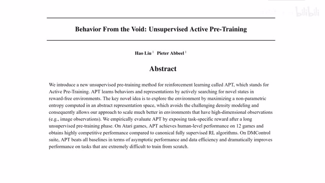
00:00:00–00:00:44 · 画面 001大家好今天我们来介绍 behavior from the voidunsupervised active pretraining 这篇文章的核心思路呢是通过 pretraining 来减少我们与环境的 supervised 的交互更具体来说呢是一开始我以 unsupervised 的情况与环境交互所谓 unsupervised 呢就是不需要接收环境中给我的 reward这种交互呢在一些环境里面是比这些有 reward 有 supervised 的情况的这些交互成本要低的那么在 pre-training 结束之后呢我们再在这个有 supervised 的情况下再对模型进行 fine-tune 这样呢能够学到一个好的 policy 在今天的视频中呢我们首先会介绍本文的 pre-training 特别是在 reinforcement learning 这个 pre-training 下面它有什么样的优势或者特色
00:00:44–00:00:59 · 画面 002
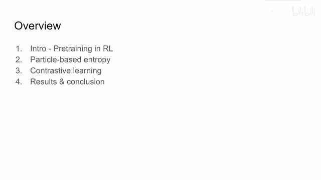
00:00:44–00:00:59 · 画面 002然后呢介绍一下本文的主要的贡献包括使用这个 particle based entropy 来帮助我们的 policy 去做 pretraining 还有这个 contrastive learning 来帮助我们在这个 pretraining 的时候学到一个好的 representation 最后呢是作者汇报的结果还有本文得到了一些结论那么首先我们来看这个关于 reinforcement learning 中的 pretraining 这里呢作者帮我们列出了一堆这个 pretraining 的方法
00:00:59–00:01:13 · 画面 003
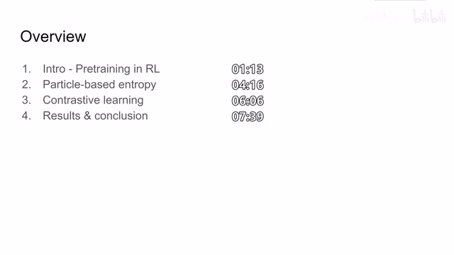
00:00:59–00:01:13 · 画面 00300:01:13–00:02:23 · 画面 004
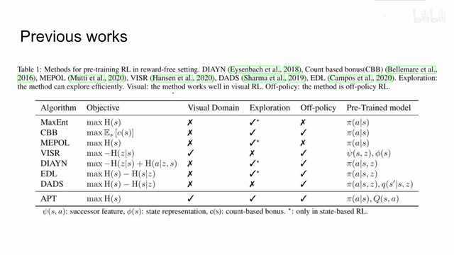
00:01:13–00:02:23 · 画面 004这些其实它们或多或少都有一些问题比如绝大多数都不是输入的图像而是直接拿到系统的状态它们有一些是没有鼓励这个 policy 去探索的而且这些打信号都是只使用了 state 甚至有一些它们是 on-policy 的这样就导致它的 data efficiency 又不是那么高那么在本文中作者使用的是 maximum entropy这样的方法最大化伤这样子能够帮助我们的 policy 去探索同时它能解决一些像前面这些使用 mutual information 这些方法中它有一些数学的问题它必须做一些数学的近似本文的方法就规避了这些问题然后同时本文是直接使用图像输入有自己的探索算法同时是 off policy 的在做完 pre-training 之后我们会得到一个 policy 得到一个
q value function 因为本文的 backbone 呢是 drq 而 drq 的 backbone 呢是 SAC 就是 Soft Actor-Critic 所以呢我们会同时有一个 policy 和这个 value network 好的那么我们来看具体本文是怎样实现这些过程的那么本文的核心思想呢就是我一开始在交互的时候我是没有 reward 的然后呢我要希望学到一个好的 representation 这个 representation 呢能够帮助我们更好的识别系统的状态
00:02:23–00:02:31 · 画面 005
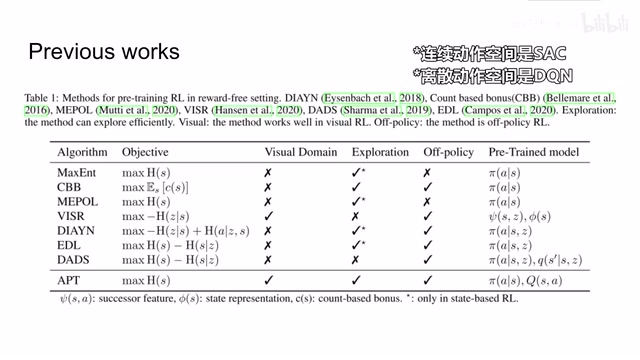
00:02:23–00:02:31 · 画面 00500:02:31–00:02:35 · 画面 006
00:02:31–00:02:35 · 画面 00600:02:35–00:03:25 · 画面 007
00:02:35–00:03:25 · 画面 007同时我还希望在 unsupervised 的情况下和环境交互的时候我们的 policy 是一个 exploration 的 policy 也就是说它可以帮我们探索尽可能多的 states 那么为了鼓励我们的 encoder 学到一个好的 representation 我们这里使用了 contrastive loss 也就是通过对比学习的手段能够加强我们学到的 representation那么为了我们的 policy 能够更好的探索呢而且因为我们的 reward 在一开始 unsupervised 的情况下是没法从环境中获取的所以呢这里作者呢是自定义了一个 reward 那么这个 reward 中呢就是一个 particle based entropy 是使用粒子群的方法来估计我们这个 distribution 的 entropy 那么当然在学完一个好的 representation 得到一个 policy 之后呢
00:03:25–00:03:26 · 画面 008
00:03:25–00:03:26 · 画面 00800:03:26–00:03:33 · 画面 009
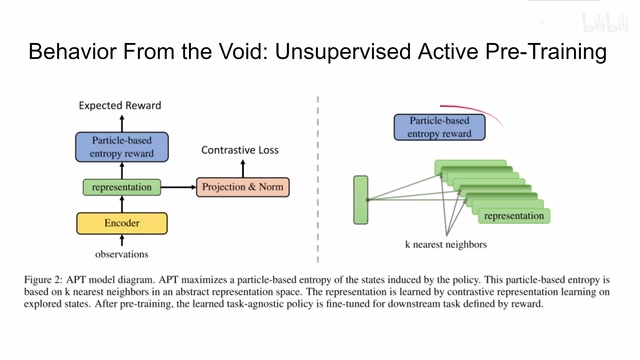
00:03:26–00:03:33 · 画面 00900:03:33–00:04:12 · 画面 010
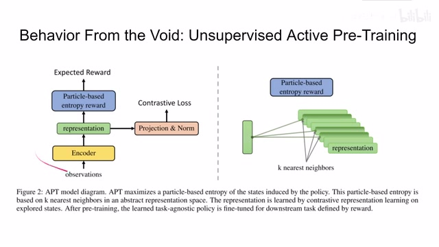
00:03:33–00:04:12 · 画面 010我们再把真实的 reward 接进来做 fine-tune，这样子呢就可以快速能够达到我们想要训练的目的。那么这样的 pre training 有什么意义呢？那么最简单的一个例子呢，就是那么假如说我现在有一个机器人在环境里面，我希望他去做不同的任务，那么我只需要把这个机器人在环境中的交互学习一遍 pre training 一遍，然后呢我再基于不同的任务给他接入奖励来做这个 fine-tune。
那么这样子呢我们就可以快速的得到很多个针对不同任务的 policy 那么下面我们就本文的两个贡献也就是这个 reward 和这个 contrastive loss 我们来具体来看那么首先是这个 reward 这个 reward 呢是基于 particle based entropy 那么它的核心思想呢是通过测量每个 particle 和它 k 个最近邻之间的距离来判断我们这个当前的 distribution 的 entropy
00:04:12–00:04:16 · 画面 011
00:04:12–00:04:16 · 画面 01100:04:16–00:05:31 · 画面 012
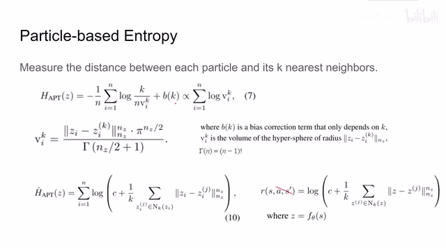
00:04:16–00:05:31 · 画面 012具体来看，这是本文使用的 Entropy，也就是我们在 unsupervised 没有监督的训练的情况下接入的 reward。这里我们有 n 个 particle，每个 particle 找到 k 个与它最近的 neighbors，这个寻找就是在我们的 latent representationlatent space 里面去寻找，把它距离放在分母上，然后前面还取了符号，也就是说随着距离的增加，我们认为这个 Entropy 它也是增加的。
然后后面的 B 是一个常数项，它只跟 K 有关。那么具体在 Latent Space 当中，我们怎么样去测量两个样本它们之间的距离？这里我们使用两个 Sample，一个作为球心，一个作为球面，我们把它构成一个超球体，通过计算超球体的体积，我们就得到这两个 Sample 之间的距离的度量。那么超球体体积的公式在这里，其中这一项是我们的阶层。
那么这样呢，我们把用不到的这些常数呢都给它去掉，最后呢把上面这个式子呢就可以化演成下面这个式子。这个呢就是我们在做 unsupervised learning 让我们的 agent 去探索这个 state space 时候实际使用的这个 reward。你可以看到这个 reward 当中呢，它不需要 action，它也不需要 next state，它只和我们的输入的 state 和这个 encoder 相关。那么 state 呢放到 encoder 里得到这个 z，就是我们在 latent space 中的 representation。
00:05:31–00:05:33 · 画面 013
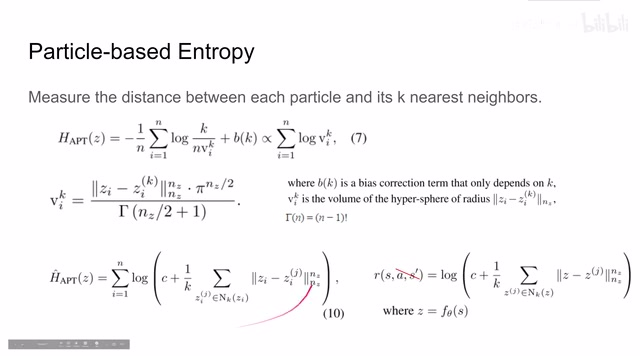
00:05:31–00:05:33 · 画面 01300:05:33–00:05:39 · 画面 014
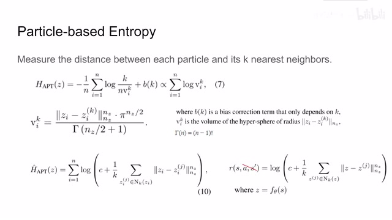
00:05:33–00:05:39 · 画面 01400:05:39–00:05:40 · 画面 015
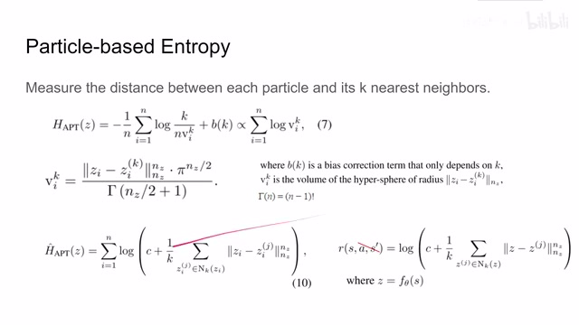
00:05:39–00:05:40 · 画面 01500:05:40–00:05:56 · 画面 016
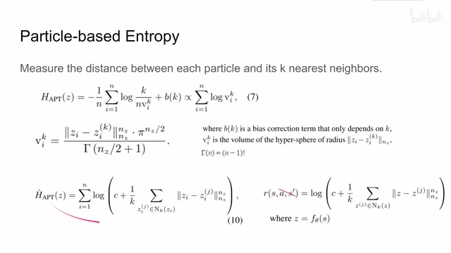
00:05:40–00:05:56 · 画面 016好的，那么我们刚刚就解决了 Particle Based Entropy Reward，也就是 Expected Reward。那么下面我们就可以看到 Contrastive Loss，这个 Contrastive Loss 其实非常简单，它跟 Pre-training 的 Exploration 刚刚 Particle Entropy 它是相互独立的。本文使用的 Contrastive Loss 跟 SimCLR 一样，就是一个 Batch 里面我的样本进来，先进 Encoder，然后经过一个 Projection Network 来投到另一个 Latent Space 里面。
00:05:56–00:06:01 · 画面 017
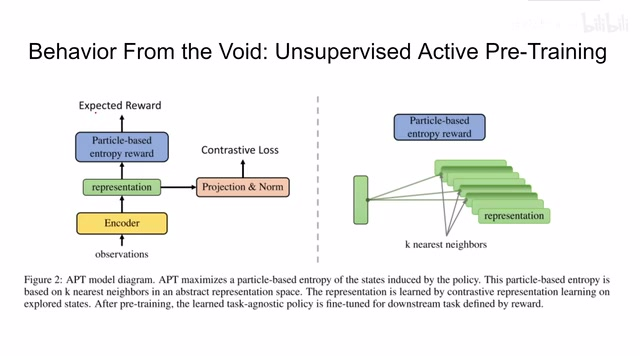
00:05:56–00:06:01 · 画面 01700:06:01–00:06:02 · 画面 018
00:06:01–00:06:02 · 画面 01800:06:02–00:06:06 · 画面 019
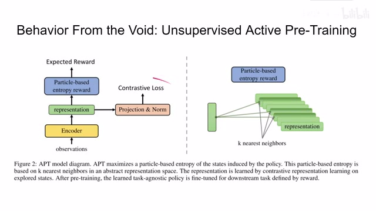
00:06:02–00:06:06 · 画面 01900:06:06–00:06:34 · 画面 020
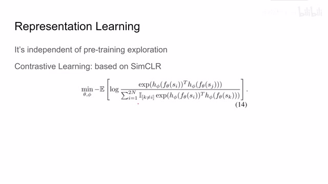
00:06:06–00:06:34 · 画面 020然后算两个 representation 之间的相关的程度，具体的 loss 我们等留到 SimCLR 这篇论文里面我们再讲。好的，那么我们最后来看到作者提供的训练本文 apt 本文提供的 active pretraining 的算法，首先就是复制化我们的 encoder 还有我们的 policy 和 network。首先我们是跟环境交互，这里我们从环境中得到的 reward 是不必要的，我们就给它扔去了。
00:06:34–00:07:42 · 画面 021
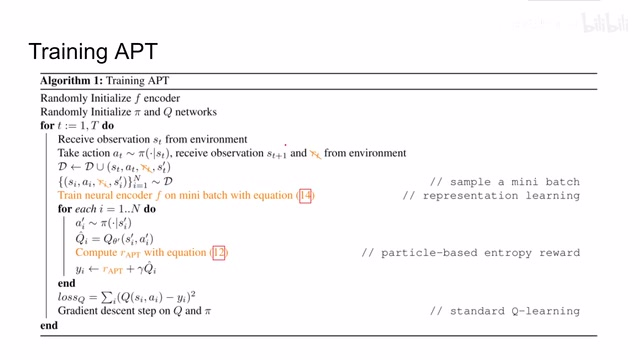
00:06:34–00:07:42 · 画面 021放到这个 replay buffer 里面，然后呢我们再使用，然后呢我们使用刚刚的介绍的 contrastive loss 来对每个 batch 呢进行 contrastive learning，然后呢来训练我们的 encoder。那么训练完 encoder 之后呢，我们把通过 particle based entropy 得到的 reward 作为像普通的跟环境交互的 reward 来替换掉原来的 reward，然后剩下的呢就跟 qlearning 一样也是这样一个表达，最后呢做这个 qlearning 就可以了。
那么这样子呢不断循环下去就是我们的 pre-training 的过程。那么当你 pre-training 结束之后，你需要 fine-tune 一个环境，你就需要把这个环境中的 reward 再接回来，直接再做 qlearning 就可以了。那么下面我们就可以看到作者汇报的结果，首先是 DeepMind Control，那么这里呢横轴是有监督的环境的交互，可以看到本文的方法当然是 outperform 其他的方法。
00:07:42–00:08:04 · 画面 022
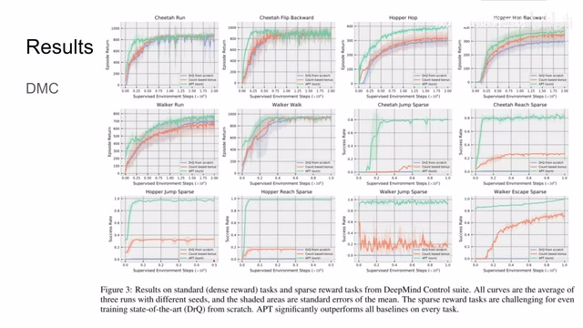
00:07:42–00:08:04 · 画面 022特别是对比这个蓝色的线是使用 DRQ 直接训练的，那这是当然的嘛，因为我们之前虽然没有 reward 但是我们还是跟环境交互了很多东西嘛，这是处在我们预期当中的。那么像雅达利环境呢，作者也做了很详细的测试，对比了这些 supervised 和 unsupervised 的这些 reinforcement learning 的方法，本文的取得的效果呢整体来说还是很不错的。此外呢，作者还做了一些消融实验，像这一组呢 optimization change 呢是说。
00:08:04–00:08:06 · 画面 023
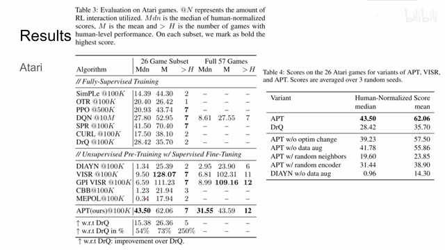
00:08:04–00:08:06 · 画面 02300:08:06–00:08:09 · 画面 024
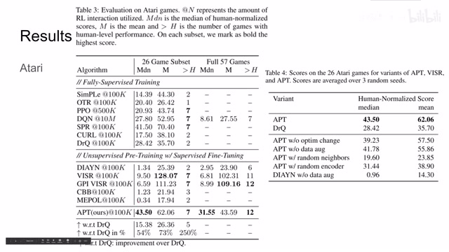
00:08:06–00:08:09 · 画面 02400:08:09–00:09:18 · 画面 025
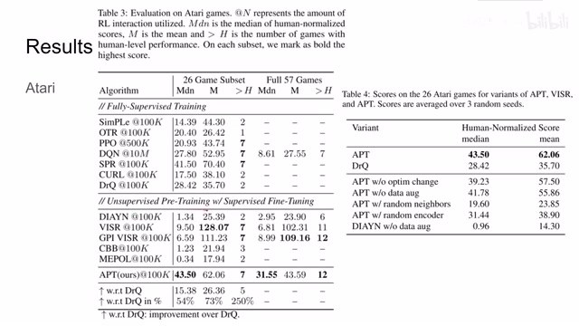
00:08:09–00:09:18 · 画面 025是原来我跟环境交互一次我只训练一步，那么后来作者发现我跟环境交互一次训练两次，我们的 policy 得到的结果是有改善的。那么其他的像 data augmentation 使用 random neighborsrandom encoder 而这些是有意义的。那么以上就是这篇论文的主要内容了，作者在附录里面也汇总了详细的 hyperparameter 的使用，但是你应该可以能够复现出来，因为本文的思想并不是非常的复杂。
取得的效果呢也很不错。那么作者呢希望说在未来呢继续探索能不能使 model-based reinforcement learning 来帮助我们探索帮助我们配 training。那作者也汇报了说有的时候呢我们的 fine-tune 会导致这个 network 突然就忘记原来所学的东西了，这些呢都是在未来值得去继续探索好的。那么以上就是我对这篇论文的简单的分析，那么感谢您的收看，再见。
00:09:18–00:09:18 · 画面 026
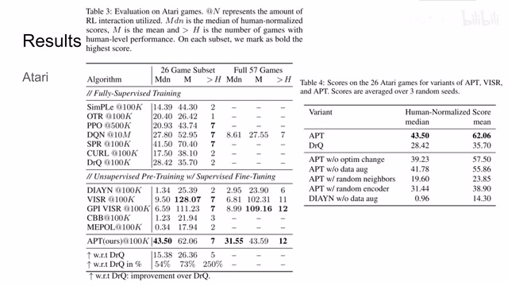
00:09:18–00:09:18 · 画面 026转写与来源说明 · 0 个自动复核提示
保留 20 个原始语音片段，0 个片段触发自动复核提示。提示仅用于定位可能的术语、重复或识别问题，不等于已确认错误。
讲解画面为源视频截图（640×360），不是可编辑 PPT 文件。全片按每秒 2 帧扫描内容变化，逐步展开页保留；连续动画保留代表画面。清晰度受源视频限制。
原视频：paper/合集_2026-10-16_机器人学/[论文简析]Behavior From the Void Unsupervised Active Pre-Training[2103.04551].mp4
SHA-256：f72bd6aa64d761766c7a5ad1b74525e1c1a42656b1ff695078f0d316c8bc051d
全文按视频语音与画面制作。原论文可从上方链接下载；完整资料包保留全文、原始逐字稿、字幕和校对记录。